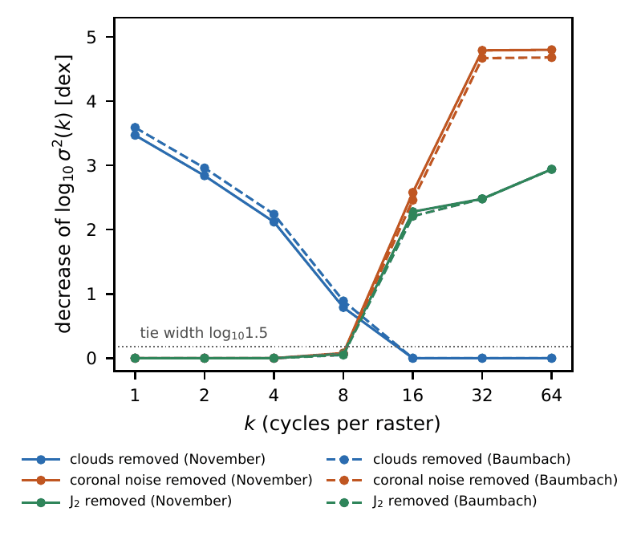
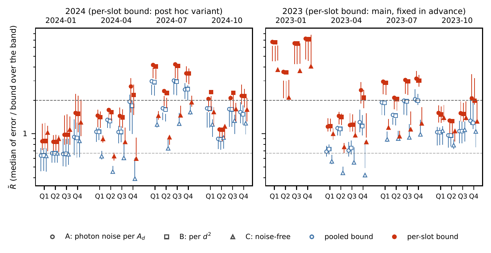

1The Sun as a lensレンズとしての太陽
Gravity bends light. When light from a far planet passes close to the Sun, the Sun's gravity bends it a little. Far beyond the planets, light that passed the Sun on all sides comes together, as in a lens. This is the solar gravitational lens.
重力は光を曲げます。遠い惑星からの光が太陽のすぐそばを通ると、太陽の重力が光を少し曲げます。惑星たちよりずっと遠くで、太陽の周りを通った光は、レンズのように集まります。これが太陽重力レンズです。
Some scientists propose to put a telescope there, and to take detailed pictures of planets of other stars (for example Turyshev and Toth 2022, and later papers). Other studies examine such a mission and its light budget with a critical eye.
そこに望遠鏡を置き、ほかの恒星の惑星を細かく写すことを提案する研究者たちがいます(たとえば Turyshev と Toth 2022、およびその後の論文)。そうした任務や、集まる光の量を批判的に調べた研究もあります。
The paper asks a narrower question. In a simple, declared model of this imaging, what limits the detail of the picture? It does not ask whether such a mission is possible, and it says nothing about whether or when a mission could take such a picture.
論文は、もっと狭い問いを立てます。この撮像の、宣言した簡単なモデルで、写真の細かさを限るものは何か。任務ができるかどうかは問わず、任務がそうした写真を撮れるかどうかやその時期についても、何も述べていません。
2How the picture is made写真の作り方
The paper follows the set-up of Turyshev and Toth (2022). In its baseline, the target has an Earth-like surface and is 30 parsecs away. The telescope is 650 astronomical units (AU) from the Sun, that is, 650 times as far as the Earth is. Its opening is 1 metre wide, and it observes light with a wavelength of 1 micrometre.
論文は、Turyshev と Toth(2022)の組み立てに従います。基本の設定では、狙う惑星は地球のような表面を持ち、30 パーセク離れています。望遠鏡は太陽から 650 天文単位、つまり地球までの距離の 650 倍の所にあります。口径は 1 m で、波長 1 マイクロメートルの光で観測します。
The lens makes an image of the planet that is much larger than the telescope. So the telescope moves across the image, one step for each pixel of the picture. The picture has 128 × 128 pixels, and one pixel covers 99.5 km of the planet.
レンズが作る惑星の像は、望遠鏡よりずっと大きいものです。そのため望遠鏡は、写真の 1 画素ごとに 1 歩ずつ、像の上を動きます。写真は 128 × 128 画素で、1 画素は惑星の上の 99.5 km に当たります。
At each step, the telescope gets the light of its own pixel. It also gets a faint blur of light from all the other pixels. So the data are a mix, and a computation must take the mix apart to recover the picture.
1 歩ごとに、望遠鏡は自分の画素の光を受けます。ほかの全ての画素からも、淡くぼやけた光を受けます。そのためデータは混ざっていて、写真を取り戻すには、計算で混ざりを解かなければなりません。
3Three barriers and one bound三つの壁と一つの下限
The paper looks at three things that limit the picture. In this guide we call them barriers.
論文は、写真を限る三つのものを調べます。このページでは、これらを壁と呼びます。
- The corona. The telescope looks toward the Sun, so it also gets light from the corona, the faint glow around the Sun. This light adds random noise.
- Clouds. Clouds hide parts of the surface, and they change from one visit to the next. In the model, clouds are a random pattern that adds to the surface. Visits one day apart are partly alike. The main settings use 16 visits, one day apart.
- The shape of the Sun's gravity. The Sun's gravity is not perfectly round (in the paper: the solar quadrupole, J2). So the lens spreads each point into a small pattern, called a caustic.
- コロナ。望遠鏡は太陽の方を向くので、太陽を囲む淡い光、コロナの光も受けます。この光が、でたらめな雑音を加えます。
- 雲。雲は表面の一部を隠し、訪れるたびに形を変えます。モデルでは、雲は表面に足される、でたらめな模様です。1 日違いの訪問どうしは、いくらか似ています。主な設定では、1 日おきに 16 回訪れます。
- 太陽の重力の形。太陽の重力は、完全には丸くありません(論文では、太陽の四重極、J2)。そのためレンズは、一つの点を、コースティクス(火線)と呼ぶ小さな模様に広げます。
The paper puts all three into one simple model. In this model, the parts add up (the model is linear), and the random parts follow the bell curve (the model is Gaussian). The model also assumes that the rotation of the planet is known.
論文は、三つを一つの簡単なモデルに入れます。このモデルでは、各部分は足し合わされ(線形)、でたらめな部分は釣り鐘の形の分布に従います(ガウス)。惑星の自転は分かっているものとします。
For this model, the paper computes a bound (in the paper: the Cramér–Rao bound). It is the smallest error that an unbiased method can have in the model. An unbiased method is one whose answers are right on average. The paper is clear on one point: this bound belongs to the declared model. It is not a limit for every possible method.
このモデルについて、論文は下限(論文ではクラメール・ラオの下限)を計算します。モデルの中で、偏りの無い方法が持ちうる、いちばん小さい誤差です。偏りの無い方法とは、平均すれば正しい答えを出す方法です。論文は一つの点をはっきりさせています。この下限は宣言したモデルのもので、あらゆる方法の限界ではありません。
A side comparison: two ways to compute a time寄り道: 時間の二つの求め方
For a planet of even brightness, with no clouds, the paper asks how long the telescope must collect light to reach a signal-to-noise ratio of 3 in each pixel. The bound of the model gives 85.5 years (129.5 years with another way to normalise the blur). A published formula (Turyshev and Toth 2022) gives 0.845 years under the same conditions. The two numbers rest on different assumptions about the blur from the other pixels. Neither number is an estimate of how long a mission would take.
明るさが一様で雲の無い惑星について、論文は、各画素で信号と雑音の比が 3 になるまで、望遠鏡がどれだけ光を集める必要があるかを問いました。モデルの下限からは 85.5 年(ぼやけの規格化を別の形にすると 129.5 年)です。発表された式(Turyshev と Toth 2022)からは、同じ条件で 0.845 年です。二つの数は、ほかの画素からのぼやけについて、違う仮定に立っています。どちらも、任務にかかる時間の見積もりではありません。
4Scale by scale大きさごとに
A picture can be split into patterns of different sizes, from wide patterns to fine ones. The paper groups the patterns by size into rings, numbered k. A larger k means a finer pattern. In the model, the bound can be written down for each ring on its own.
写真は、広い模様から細かい模様まで、いろいろな大きさの模様に分けられます。論文は、模様を大きさごとに環にまとめ、k で番号を付けます。k が大きいほど、模様は細かくなります。モデルでは、下限を環ごとに別々に書き表せます。
Then the paper removes one barrier at a time and sees how much the bound goes down. The barrier whose removal helps most causes the largest loss of information at that size.
次に論文は、壁を一つずつ取り除き、下限がどれだけ下がるかを見ます。取り除いたときにいちばん助かる壁が、その大きさで情報を最も多く失わせている壁です。
- For the widest patterns (rings 1 to 4, about 1,600 km and larger), clouds cause the largest loss.
- For the finest patterns (rings 32 and 64, 200 km and smaller), the noise from the corona causes the largest loss.
- In between (rings 8 and 16), the order changes with the settings. The paper calls it undetermined.
- いちばん広い模様(環 1〜4、約 1600 km 以上)では、雲が最も多く失わせます。
- いちばん細かい模様(環 32 と 64、200 km 以下)では、コロナの雑音が最も多く失わせます。
- その間(環 8 と 16)では、順番が設定によって入れ替わります。論文はこれを未定と呼びます。
The order at the widest and the finest sizes stays the same when the paper changes, one at a time, the model of the corona, the kind of model cloud, the number of visits, or the observing time. This pattern is for the model's clouds, not for the real Earth's clouds (see Section 6).
いちばん広い所といちばん細かい所の順番は、コロナのモデル、モデルの雲の種類、訪問の回数、観測の時間を一つずつ変えても同じです。この形は、モデルの雲についてのもので、本物の地球の雲についてではありません(6 節)。
The shape of the Sun's gravity also matters. In one setting (in the paper, sin²βs = 0.3), the information at ring 11 vanishes: no pattern of that size reaches the threshold. The paper does not say whether this zero remains with effects that the model leaves out.
太陽の重力の形も効きます。ある設定(論文では sin²βs = 0.3)では、環 11 で情報が消えます。その大きさの模様は、どれもしきい値に届きません。モデルが外した効果を入れてもこのゼロが残るかについて、論文は述べていません。
5What “finest detail” means「いちばん細かい所」の決め方
Which barrier sets the finest detail that the picture can show? To answer, we must first define “finest detail”.
写真が示せるいちばん細かい所を決めるのは、どの壁か。答えるには、まず「いちばん細かい所」を定めなければなりません。
For each ring, compare the signal with the error. Call the ring seen if the signal is at least as large as the error times a threshold (the paper uses thresholds 1 and 4). The paper then uses four rules:
環ごとに、信号と誤差を比べます。信号が、誤差にしきい値を掛けたもの以上なら、その環は見えたとします(論文はしきい値 1 と 4 を使います)。そのうえで、論文は四つの決め方を使います。
- Rule one (D1): go from wide to fine, and stop at the first ring that is not seen.
- Rule two (D2): take the finest ring that is seen, even after a gap.
- Rule three (D3): count the rings that are seen.
- Rule four (D4): like rule one, but it averages the ratio of signal to error pattern by pattern within each ring.
- その一(D1): 広い方から細かい方へ進み、最初の見えない環で止まる。
- その二(D2): 途中に抜けがあっても、見えたいちばん細かい環を取る。
- その三(D3): 見えた環の数を数える。
- その四(D4): その一と同じだが、信号と誤差の比を、環の中の模様ごとに取ってから平均する。
The binding barrier is the barrier whose removal makes the finest detail finer by the most. If the second-best gain is at least two thirds of the best, the answer is undetermined.
決め手の壁とは、取り除いたときに、いちばん細かい所が最も細かくなる壁です。二番目の伸びが、一番の伸びの 3 分の 2 以上なら、答えは未定です。
The result: the binding barrier depends on the rule, on the threshold, and on the kind of model cloud. The paper finds one clear reason. With one kind of model cloud (Gaussian-correlated), the signal falls below the error only in a band of middle sizes: rings 7 to 12, which is 910 to 531 km on the planet. Rules one and four stop before this band. Rule two jumps over it, to finer rings where the signal is large enough again.
結果: 決め手の壁は、決め方、しきい値、モデルの雲の種類によって変わります。論文は、はっきりした理由を一つ見つけました。ある種類のモデルの雲(ガウス型の相関)では、信号が誤差を下回るのは、中くらいの大きさの帯、環 7〜12、惑星の上で 910〜531 km だけです。決め方その一とその四は、この帯の手前で止まります。その二は帯を飛び越え、信号が再び十分に大きい、より細かい環へ進みます。
With the other kind of model cloud (exponentially correlated), there is no such band. Figure 5 gives the counts over 120 settings. Some variants could not be built in the model, so the counts of a decided barrier are upper limits.
もう一つの種類のモデルの雲(指数型の相関)では、そうした帯はありません。図 5 は、120 の設定での数です。モデルで組めなかった変形があるため、決まった壁の数は上限です。
Without clouds and without the shape of the Sun's gravity, only the noise is left. Then the finest ring seen hardly depends on the rule. In the baseline at threshold 1, it is 637 km after 1 year of observing, 354 km after 10 years, and 199 km after 100 years.
雲も太陽の重力の形も無いと、残るのは雑音だけです。そのとき、見えるいちばん細かい環は、決め方にほとんどよりません。基本の設定、しきい値 1 で、観測 1 年で 637 km、10 年で 354 km、100 年で 199 km です。
6Real clouds, measured in pictures of the Earth地球の写真で測った本物の雲
The model's clouds are simple. Real clouds may differ. So the paper measures real clouds in pictures of the Earth from EPIC, a camera on the spacecraft DSCOVR. EPIC sees the whole day side of the Earth. Here the Earth stands in for an Earth-like planet.
モデルの雲は単純です。本物の雲は違うかもしれません。そこで論文は、探査機 DSCOVR のカメラ EPIC が撮った地球の写真で、本物の雲を測ります。EPIC は、地球の昼の側の全体を写します。ここでは、地球が、地球のような惑星の代わりです。
- Data: red light (680 nm), days 1 to 30 of January, April, July and October 2024, 228 pictures in total. Each day gives the pictures nearest to 00:00 and to 12:00 universal time (UTC).
- Surface and clouds: for each spot on the Earth, the paper takes a low value from the month's pictures (the value that 10% of the pictures are below). This is the surface. The rest of each picture, the picture minus the surface, is the cloud part.
- Brightness: the model works with brightness relative to the mean. So the paper divides by a mean brightness. It tries four ways to do this. The main way was chosen after a first look at the records. The paper reports all four and does not say which is right.
- データ: 赤い光(680 nm)、2024 年の 1 月・4 月・7 月・10 月の 1〜30 日、合わせて 228 枚。1 日ごとに、世界時(UTC)の 0 時と 12 時にいちばん近い写真を使います。
- 表面と雲: 地球の各地点について、その月の写真から低い方の値(写真の 10 % がそれより低い値)を取ります。これを表面とします。それぞれの写真から表面を引いた残りが、雲の部分です。
- 明るさ: モデルは、平均に対する明るさで動きます。そのため論文は、平均の明るさで割ります。その割り方を 4 通り試します。主な割り方は、記録を一度見た後で選びました。論文は 4 通り全てを示し、どれが正しいかは言いません。
What the paper finds:
論文が見つけたこと。
- How fast the clouds change from day to day fits the class of the model in all four months. An exponential correlation fits best.
- With these measured clouds in the model, the binding barrier is again clouds, the corona, or undetermined, depending on the choices (Figure 6). With the other brightness divisors based on the surface, clouds bind in 15 or 16 of the 16 combinations.
- 雲が日ごとに変わる速さは、4 か月の全てで、モデルの部類に収まりました。相関の形は、指数型がいちばんよく合いました。
- 測った雲をモデルに入れても、決め手の壁は、選び方によって、雲か、コロナか、未定になります(図 6)。表面にもとづく別の割り方では、16 の組み合わせのうち 15 か 16 で雲が決め手です。
But the real clouds also have properties that the model does not have:
しかし本物の雲には、モデルに無い性質もあります。
- Their values are lopsided and have heavy tails, unlike the bell curve (skewness 1.17 to 1.44; excess kurtosis 0.72 to 1.47).
- After two and three days, they are more alike than the model says.
- The surface has more wide patterns, relative to fine ones, than the model's surface.
- The mean of the cloud part changes with the angles of the Sun and of the view.
- 値の分布は片寄っていて裾が重く、釣り鐘の形とは違います(歪度 1.17〜1.44、超過尖度 0.72〜1.47)。
- 2 日後や 3 日後にも、モデルが言うより似ています。
- 表面は、モデルの表面よりも、細かい模様に比べて広い模様を多く持ちます。
- 雲の部分の平均は、太陽の角度や、見る角度によって変わります。
So the paper treats the bound as a property of the declared model only.
そのため論文は、下限を、宣言したモデルだけの性質として扱います。
7A test with real pictures (2024)本物の写真で試す(2024 年)
Next, the paper sends real EPIC pictures through the imaging model. For each month, the surface built from days 1 to 15 is the truth. The pictures of days 16 to 30 pass through the model, and four methods try to recover the surface (the paper calls them Q1 to Q4). The conditions favour the methods: for example, the cloud statistics are taken as known.
次に論文は、EPIC の本物の写真を、撮像のモデルに通します。各月について、1〜15 日から作った表面を正解とします。16〜30 日の写真をモデルに通し、四つの方法で表面を取り戻してみます(論文では Q1〜Q4)。条件は方法に有利です。たとえば、雲の統計は分かっているものとします。
For each result, the paper divides the error by the bound and puts the result in a category (Figure 7). This comparison shows how real-cloud reconstructions compare with the bound. It does not test whether the model bound holds for real clouds.
結果ごとに、論文は誤差を下限で割り、結果を区分に入れます(図 7)。この比べ方は、本物の雲での取り戻しが下限とどう比べられるかを示します。モデルの下限が本物の雲で成り立つかを試すものではありません。
- Near 00:00 UTC, the set of sizes used for the comparison was empty, so no comparison was possible. This follows from how the set is defined. It does not mean that the surface cannot be seen.
- Near 12:00 UTC, the categories split by month, method and setting. The paper does not pick one of them and does not rank the methods.
- In the main configuration, 22 results were below the bound (5 of them with the main brightness divisor).
- After seeing this, the paper built the bound's clouds separately for each time of day. With this bound, none of the 22 stayed below: 16 reached the bound, and 6 were undetermined. This bound was chosen after seeing the results.
- 世界時 0 時ごろは、比べるための大きさの組が空で、比べられませんでした。これは組の定め方から来るもので、表面が見えないという意味ではありません。
- 世界時 12 時ごろは、区分が、月・方法・設定によって分かれました。論文はその一つを選ばず、方法の順位も付けません。
- 主な組み立てでは、22 の結果が下限より下でした(主な明るさの割り方では、そのうち 5)。
- これを見た後で、論文は、下限の中の雲を時刻ごとに別々に作りました。この下限では、22 のどれも下に残りませんでした。16 は下限に届き、6 は未定でした。この下限は、結果を見た後で選んだものです。
8A test fixed in advance (2023)前もって決めた試し(2023 年)
Because the bound for each time of day came after the results, the paper tested it again on other data. Before it computed anything for 2023, it fixed this bound as the main bound, kept the data processing, the methods and the categories, and wrote down for each 2024 finding what would count as holding or breaking. (These criteria were written after the 2024 numbers were known.) The data are days 1 to 30 of January, April, July and October 2023.
時刻ごとの下限は結果の後に来たので、論文は別のデータでもう一度試しました。2023 年について何かを計算する前に、この下限を主な下限として固定し、データの処理・方法・区分をそのままにし、2024 年の結果ごとに、どうなれば保たれ、どうなれば崩れるかを書きました(この基準は、2024 年の数を知った後で書いたものです)。データは、2023 年の 1 月・4 月・7 月・10 月の 1〜30 日です。
- Main result: in the main configuration, no result was below the bound in any of the four months (0 of 96 per month).
- The 48 results near 00:00 UTC in each month could not be compared, again. Of the 48 near 12:00 UTC, 0, 5, 4 and 7 were undetermined (January, April, July, October).
- With the bound pooled over both times (now a variant), 17 results in April and 4 in October were below it. None of them was below the main bound: 19 reached it, and 2 were away from it.
- 主な結果: 主な組み立てでは、4 か月のどれでも、下限より下の結果はありませんでした(各月 96 のうち 0)。
- 各月の 0 時ごろの 48 の結果は、やはり比べられませんでした。12 時ごろの 48 のうち、未定は 0、5、4、7 でした(1 月・4 月・7 月・10 月)。
- 二つの時刻を合わせて作った下限(今回は変形)では、4 月に 17、10 月に 4 の結果が下でした。そのどれも、主な下限より下ではありませんでした。19 は届き、2 は遠いでした。
| 2024 finding | 2023 result | |
|---|---|---|
| H1 | No comparison possible near 00:00 UTC | holds (for the bound per time of day only) |
| H2 | None below the bound per time of day | holds |
| H3 | Results below the pooled bound do not stay below | holds in April and October (October: 4 cases, fewer than five); not applicable in January and July |
| H5 | How the categories split near 12:00 UTC | holds when the four months are pooled; breaks in three months |
| H6 | A reading of how pictures are assigned to the two times | could not be tested |
| H7 | How fast clouds change from day to day | holds |
| H8 | Exponential shape of the correlation | holds |
| H9 | The binding barrier depends on the definition | holds |
| H10 | Properties outside the model | breaks in October 2023 (the angle of the Sun) |
| 2024 年の結果 | 2023 年の結果 | |
|---|---|---|
| H1 | 0 時ごろは比べられない | 保たれる(時刻ごとの下限のときだけ) |
| H2 | 時刻ごとの下限より下は無い | 保たれる |
| H3 | 合わせた下限より下の結果は、下に残らない | 4 月と 10 月で保たれる(10 月は 4 件で、5 件より少ない)。1 月と 7 月は当てはまらない |
| H5 | 12 時ごろの区分の分かれ方 | 4 か月を合わせると保たれる。3 か月で崩れる |
| H6 | 写真を二つの時刻に割り当てる読み方 | 試せなかった |
| H7 | 雲が日ごとに変わる速さ | 保たれる |
| H8 | 相関の形が指数型 | 保たれる |
| H9 | 決め手の壁は定め方による | 保たれる |
| H10 | モデルの外の性質 | 2023 年 10 月で崩れる(太陽の角度) |
The paper says that the 2023 results do not make the 2024 statements stronger. They show what the same method, fixed in advance, gives on other months.
論文は、2023 年の結果が 2024 年の主張を強めるものではないと述べています。前もって固定した同じ方法が、ほかの月で何を与えるかを示すものです。
A detail: the written plan did not say what to do in some cases of the categories (for example, when the ratio lies outside its own range). The scripts fixed those cases before any computation. If the plan's wording were read literally, a few counts would change, for example the undetermined count near 12:00 UTC in July 2023 (4 would become 0). The main result, 0 of 96 per month, would not change. The paper's Appendix C gives all of these numbers.
細かい点: 書いた計画は、区分のいくつかの場合(たとえば、比が自分の幅の外にあるとき)をどう扱うかを言っていませんでした。台本が、計算の前にそれらの場合を決めました。計画の字句を文字どおりに読むと、いくつかの数が変わります。たとえば 2023 年 7 月の 12 時ごろの未定の数は、4 から 0 になります。主な結果、各月 96 のうち 0 は変わりません。論文の付録 C に、これらの数が全てあります。
9What the paper does not claim論文が主張しないこと
- The bound belongs to the declared linear-Gaussian model. It is not a limit for every method. The paper does not treat picture quality measures of biased methods.
- The paper makes no statement about whether or when a solar-gravitational-lens mission could take a picture of a planet of another star.
- It uses one camera (EPIC, red light at 680 nm), four months in each of 2024 and 2023 analysed separately, and two times of day. The Earth stands in for an Earth-like surface. Nothing is extended to other planets or to other times of the Earth.
- The comparisons with real pictures do not test whether the model bound holds for real clouds. The paper does not say that it holds, or that it fails.
- Outside the main configuration, some cases remain below the bound per time of day, in 2024 and in 2023. The paper lists them and does not combine them with the main configuration.
- A further check with random stand-in clouds could not be calibrated, so its results are not used for the paper's statements.
- Not in the model: for example, uncertainty in the shape of the blur, noise other than the noise of light, clouds on a round planet, and some finer effects of the Sun's gravity and corona on the light.
- 下限は、宣言した線形ガウスのモデルのものです。あらゆる方法の限界ではありません。論文は、偏りのある方法の画質の尺度は扱いません。
- 太陽重力レンズの任務が、ほかの恒星の惑星を写せるかどうかや、その時期について、論文は何も述べていません。
- 使ったのは、一つのカメラ(EPIC、680 nm の赤い光)、2024 年と 2023 年のそれぞれ 4 か月(別々に解析)、1 日の二つの時刻です。地球は、地球のような表面の代わりです。ほかの惑星や、地球のほかの時代には、何も広げていません。
- 本物の写真との比べは、モデルの下限が本物の雲で成り立つかを試すものではありません。論文は、成り立つとも、成り立たないとも言いません。
- 主な組み立ての外では、2024 年と 2023 年に、時刻ごとの下限より下に残る場合がいくつかあります。論文はそれらを並べ、主な組み立てとは合わせません。
- でたらめな代わりの雲を使った追加の確かめは、較正できなかったので、論文の主張には使っていません。
- モデルに入っていないもの: たとえば、ぼやけの形の不確かさ、光の雑音以外の雑音、丸い惑星の上の雲、太陽の重力とコロナが光に与える、いくつかの細かい効果。
10How the work was checked仕事の確かめ方
- Plans, criteria and scripts were saved before each computation. The data were frozen with checksums (sha256) before any statistics were computed. The records are made by scripts and never edited by hand.
- The decisions made after seeing results are listed in the paper (Appendix C). Examples: the main brightness divisor, and the bound per time of day in 2024.
- Each statement was confirmed by the author after a reviewer, in a fresh session without shared context, had accepted it (in some cases on conditions). The reviewers were AI.
- The Zenodo record holds the scripts, the records, the list of EPIC files with their checksums, the commands to fetch them again, and the project log.
- 計画・基準・台本は、計算のたびに、その前に保存しました。データは、統計を計算する前にチェックサム(sha256)で固定しました。記録は台本が作り、手で直していません。
- 結果を見た後で決めたことは、論文に並べてあります(付録 C)。たとえば、主な明るさの割り方や、2024 年の時刻ごとの下限です。
- 主張はそれぞれ、文脈を共有しない新しいセッションの審査役が受け入れた後に(条件つきの場合もあります)、著者が確定しました。審査役は AI です。
- Zenodo の記録には、台本・記録・EPIC のファイルの一覧とチェックサム・取り直しのためのコマンド・作業の記録が入っています。
11Two figures from the paper論文の図を二つ
Show the paper's Figures 2 and 4 (in English, as in the paper)論文の図 2 と図 4 を見る(論文のとおり英語)


12Words used in this guideこのページの言葉
- Solar gravitational lens
- The Sun's gravity bends light that passes close to it, so that, far beyond the planets, the light comes together as in a lens.
- Astronomical unit (AU)
- The distance from the Sun to the Earth.
- Parsec (pc)
- A unit of distance used for stars, about 3.26 light-years.
- Corona
- The faint glow around the Sun. Its light adds noise to the data.
- Caustic
- The small pattern into which the lens spreads one point, because the Sun's gravity is not perfectly round.
- Barrier
- In this guide: the corona, the clouds, or the shape of the Sun's gravity.
- Linear-Gaussian model
- A model in which the parts add up and the random parts follow the bell curve.
- Bound (Cramér–Rao bound)
- The smallest error that an unbiased method can have in the model.
- Unbiased method
- A method whose answers are right on average.
- Ring k
- A group of patterns of one size. A larger k means a finer pattern.
- Threshold
- How large the signal must be, compared with the error, for a ring to count as seen.
- Binding barrier
- The barrier whose removal makes the finest detail finer by the most.
- Undetermined
- The answer when the choices or the uncertainty do not give one clear result.
- DSCOVR and EPIC
- A spacecraft and its camera, which takes pictures of the whole day side of the Earth.
- UTC
- Universal time, the time scale used for the two daily pictures.
- Bound per time of day / pooled bound
- The bound with clouds measured separately for 00:00 and 12:00 UTC, or for both times together.
- Main configuration
- The main stage and choices of the analysis, fixed in the paper; other stages are listed separately.
- 太陽重力レンズ
- 太陽の重力が、そばを通る光を曲げ、惑星たちよりずっと遠くで光がレンズのように集まること。
- 天文単位
- 太陽から地球までの距離。
- パーセク
- 星の距離に使う単位で、約 3.26 光年。
- コロナ
- 太陽を囲む淡い光。その光が、データに雑音を加えます。
- コースティクス(火線)
- 太陽の重力が完全には丸くないために、レンズが一つの点を広げてできる小さな模様。
- 壁
- このページでは、コロナ・雲・太陽の重力の形のこと。
- 線形ガウスのモデル
- 各部分が足し合わされ、でたらめな部分が釣り鐘の形の分布に従うモデル。
- 下限(クラメール・ラオの下限)
- モデルの中で、偏りの無い方法が持ちうる、いちばん小さい誤差。
- 偏りの無い方法
- 平均すれば正しい答えを出す方法。
- 環 k
- 同じ大きさの模様のまとまり。k が大きいほど細かい模様。
- しきい値
- 環が見えたと数えるために、信号が誤差に比べてどれだけ大きくなければならないか。
- 決め手の壁
- 取り除いたときに、いちばん細かい所が最も細かくなる壁。
- 未定
- 選び方や不確かさのために、はっきりした一つの結果が出ないときの答え。
- DSCOVR と EPIC
- 探査機と、そのカメラ。地球の昼の側の全体を写します。
- UTC(世界時)
- 1 日 2 枚の写真に使う時刻の基準。
- 時刻ごとの下限・合わせた下限
- 雲を 0 時と 12 時で別々に測った下限と、二つの時刻を合わせて測った下限。
- 主な組み立て
- 論文で固定した、解析の主な段階と選び方。ほかの段階は別に並べてあります。
13Read the paper論文を読む
Maeda, Y. (2026). Clouds, coronal noise and the definition of resolution in solar-gravitational-lens imaging: a linear-Gaussian information map and clouds measured in DSCOVR/EPIC images of Earth (Version 1.0). Zenodo. https://doi.org/10.5281/zenodo.24014285
The Zenodo record holds the paper (PDF) and an archive with the scripts, the records of the computations and the project log. The paper is in English and is under the CC BY 4.0 license. The EPIC data come from NASA (EPIC Level 1B, version 3).
Zenodo の記録には、論文(PDF)と、台本・計算の記録・作業の記録をまとめた保管が入っています。論文は英語で、ライセンスは CC BY 4.0 です。EPIC のデータの出どころは NASA です(EPIC Level 1B、第 3 版)。
14About this pageこのページについて
This page and its video explain the paper for a general audience. They use only the paper's own results. If this page and the paper differ, the paper is correct. The pictures of planets and clouds on this page and in the video are drawings, not EPIC pictures. The Japanese version is a translation of the English version.
このページと動画は、一般の方に向けて論文を解説するものです。使っているのは論文自身の結果だけです。このページと論文が違うときは、論文が正しいです。このページと動画の惑星や雲の絵は、描いたもので、EPIC の写真ではありません。日本語版は、英語版の翻訳です。
Made with AI. Claude, an AI model by Anthropic, wrote the text, the figures, the video script, the animation code, and this page, at the request of the paper's author.
AI で作りました。文章・図・動画の台本・アニメーションのコード・このページは、論文の著者の依頼で、Anthropic の AI モデル Claude が書きました。
The paper also states its own use of AI. An AI system, Claude Code by Anthropic, carried out the work: the scripts, the computations, the records, the figures and the text of the paper. The review rounds used the same kind of AI in fresh sessions without shared context. Another AI assistant (Claude) helped the author with the plan and with checks. The author looked over the whole typeset candidate of version 1.0 and found no problems, including in the abstract and the figures. The author did not check the derivations, the code, the numerical results or the references (see “Use of AI tools” and “Human check” in the paper).
論文も、AI の使い方を自ら書いています。台本・計算・記録・図・論文の本文の仕事をしたのは、Anthropic の AI システム Claude Code です。審査は、同じ種類の AI が、文脈を共有しない新しいセッションで行いました。もう一つの AI の助手(Claude)が、計画と確かめで著者を助けました。著者は、第 1.0 版の組版した候補の全体に目を通し、要旨や図を含めて問題が無いことを確かめました。著者は、導出・コード・数値の結果・参考文献は確かめていません(論文の「Use of AI tools」と「Human check」)。
Video. The animation uses Manim Community Edition. The voice is synthetic: Kokoro-82M (Apache License 2.0), run with kokoro-onnx. The video font is Computer Modern (CMU Serif).
動画。アニメーションは Manim Community Edition で作りました。声は合成音声で、Kokoro-82M(Apache License 2.0)を kokoro-onnx で動かしました。動画の文字は Computer Modern(CMU Serif)です。
License. The text, figures, and video of this page are available under CC BY 4.0. The two figures in Section 11 are from the paper, also under CC BY 4.0.
ライセンス。このページの文章・図・動画は、CC BY 4.0 で使えます。11 節の二つの図は論文のもので、これも CC BY 4.0 です。